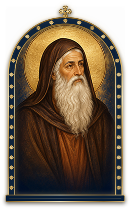
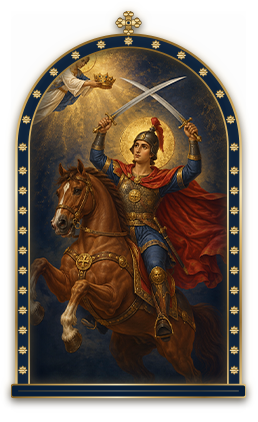

القديس أثناسيوس الرسوليحامي الإيمان
الشهيد العظيم أبي سيفينفيلوباتير مرقوريوس

8:00
8:00الأحد ٨ نوفمبر
افتح «أسرة البابا أثناسيوس»stathanasiosyouth.github.io
فيديوصورةبورتريه
أسرة البابا أثناسيوس
لخدمة شعب كنيستها الحبيبة في سفاجا
كل اللي يخص اجتماعنا… في مكان واحد
مرحبًا بك في تطبيق أسرة البابا أثناسيوس لخدمة شعب سفاجا
اعمل حسابك في دقيقةعلشان تتابع حجوزاتك ونقطك والمسابقات، ويوصلك كل جديد.
المس الشاشة علشان تدخلبصوت 🔊